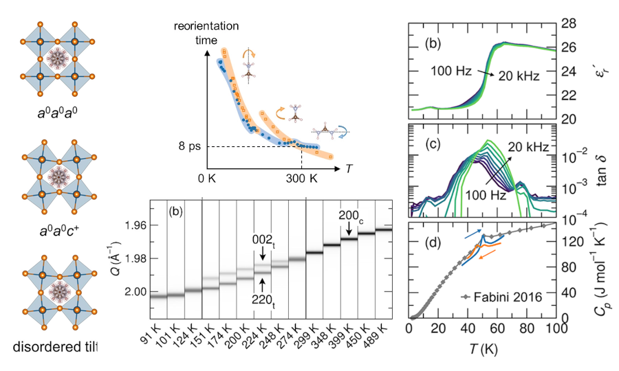
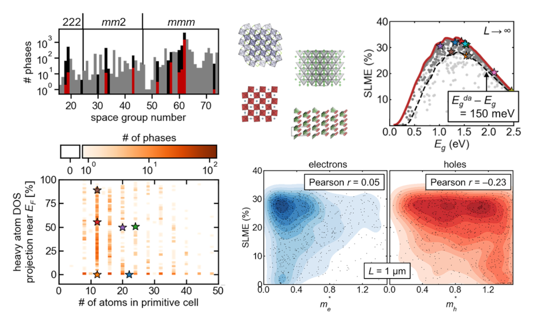
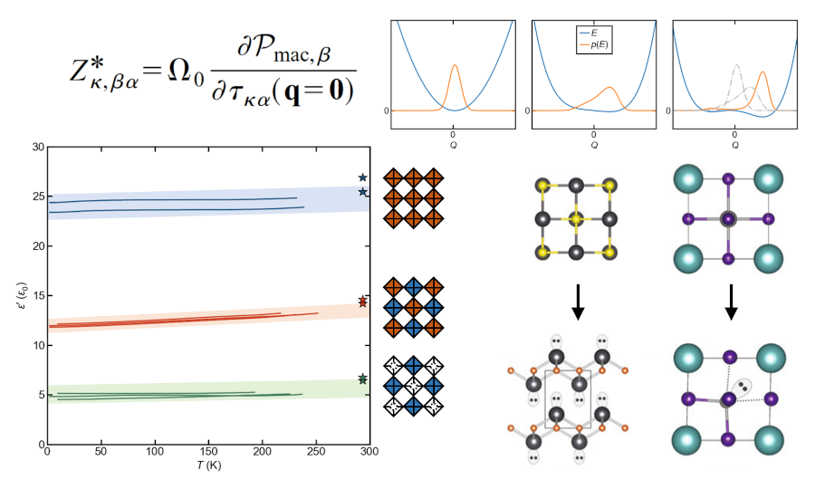
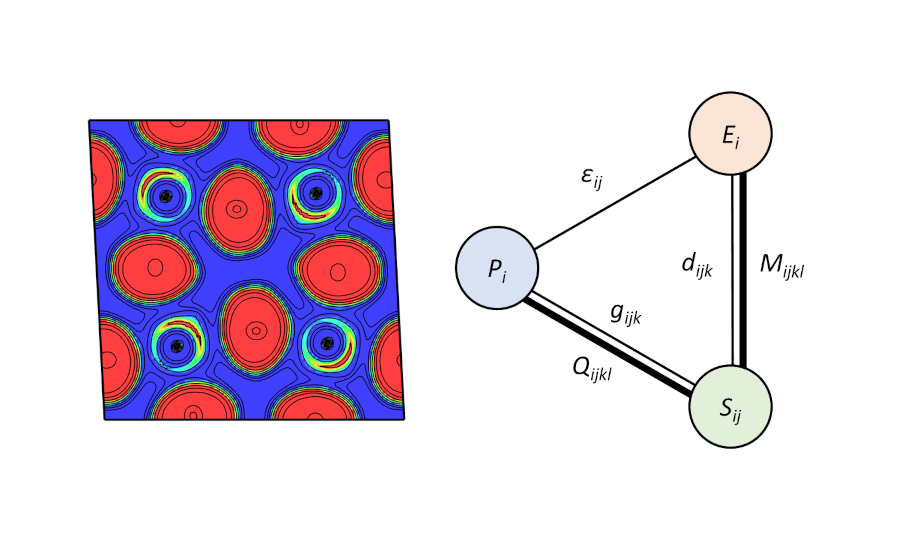
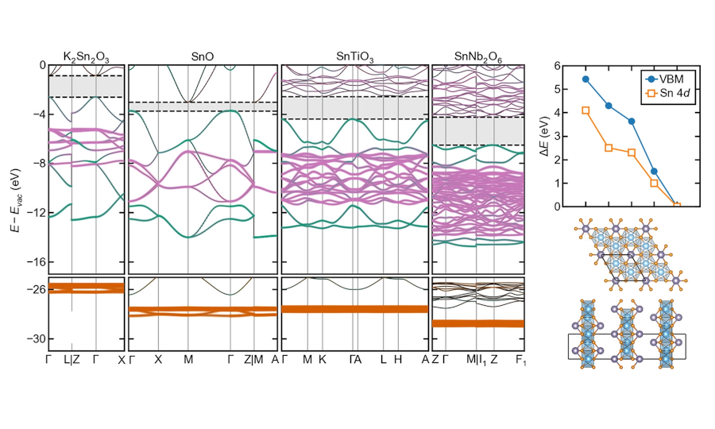
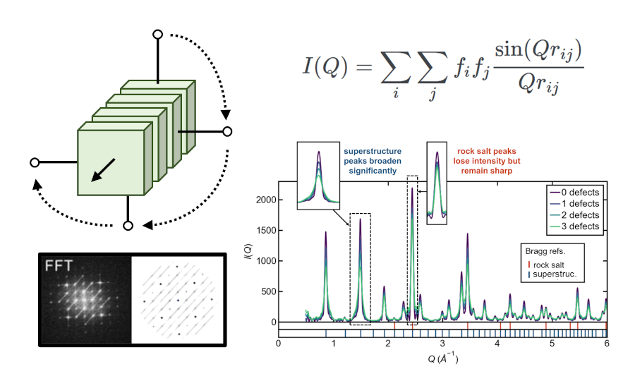

| Structure & plastic crystal dynamics of hybrid organic–inorganic materials | Computationally-guided materials design & discovery |
|  |  |
|
J. Am. Chem. Soc. 2017, 139, 16875.
Angew. Chem. Int. Ed. 2016, 55, 15392. J. Phys. Chem. Lett. 2016, 7, 376. |
Phys. Rev. Mater. 2021, 5, 124202.
Phys. Rev. Mater. 2021, 5, 054202. Chem. Mater. 2019, 31, 1561. |
| Chemical design and property impacts of strongly polar soft vibrations in perovskite halides | Chemical and epitaxial control of electric polarization and its textures in perovskite halides |
|  |  |
|
Nat. Commun. 2024, 15, 4184.
Adv. Mater. 2022, 34, 2107932. Mater. Adv. 2021, 2, 4610. MRS Bull. 2020, 45, 467. Chem. Sci. 2017, 8, 5628. J. Am. Chem. Soc. 2016, 138, 11820. |
J. Am. Chem. Soc. 2024, 146, 15701. |
| Chemical and structural determinants of electronic structure in oxide & halide semiconductors | Structure of surfaces and extended defects in oxide photocatalysts and sulfide solid electrolytes |
|  |  |
|
Chem. Mater. 2021, 33, 2824.
Z. Anorg. Allg. Chem. 2021, 647, 857. MRS Bull. 2020, 45, 467. Chem. Mater. 2015, 27, 7137. Appl. Phys. Lett. 2015, 107, 131109. |
Chem. Mater. 2021, 33, 2824. |
{kind=link}